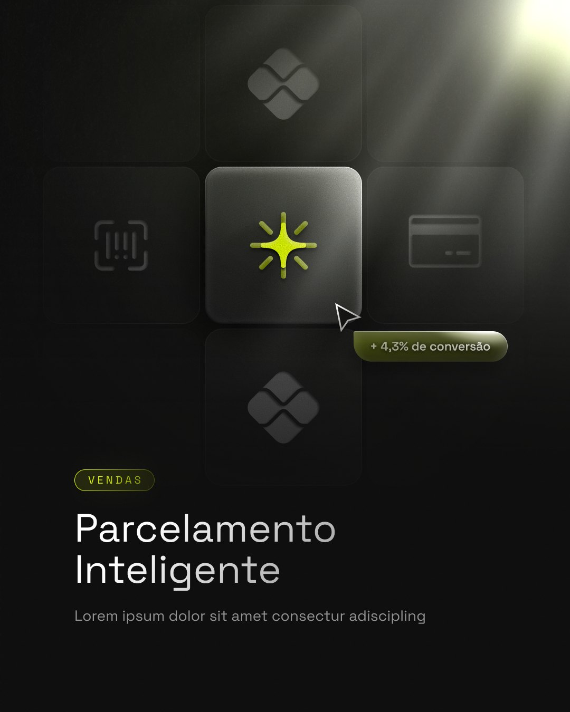
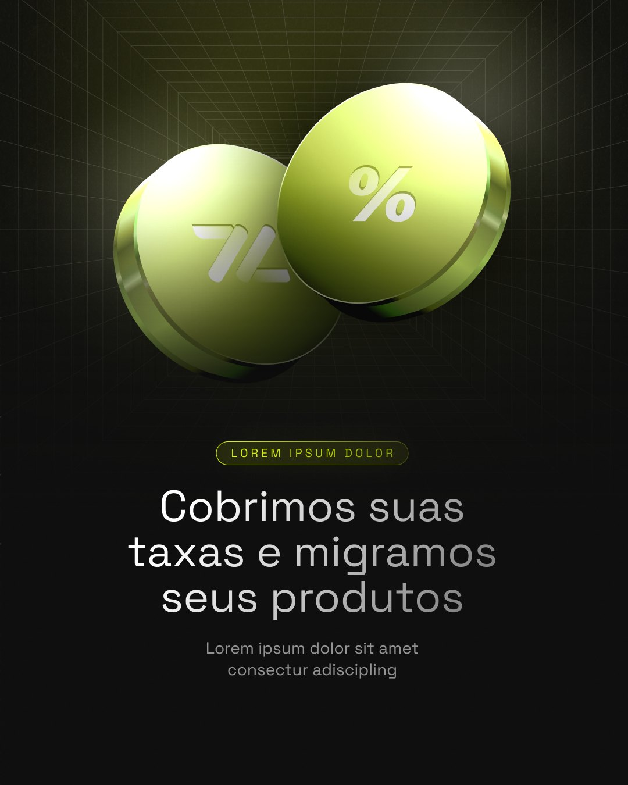
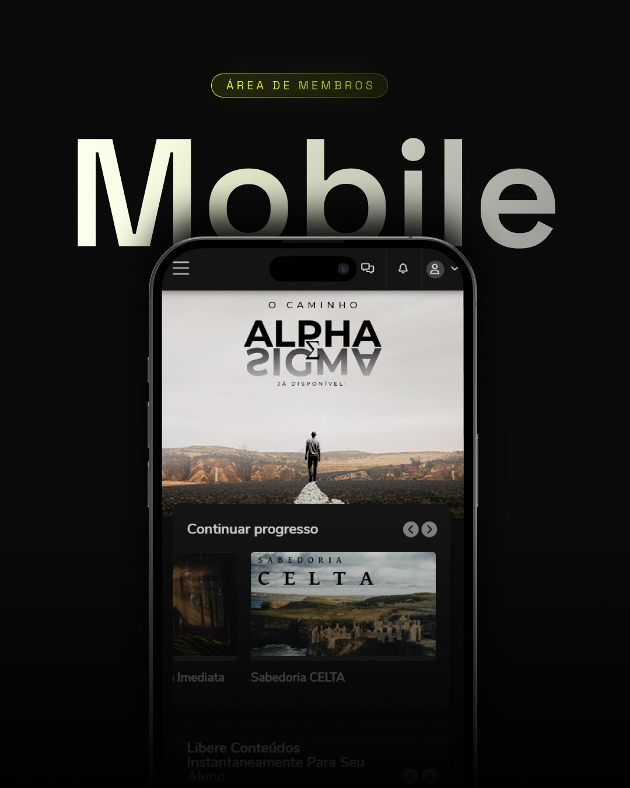
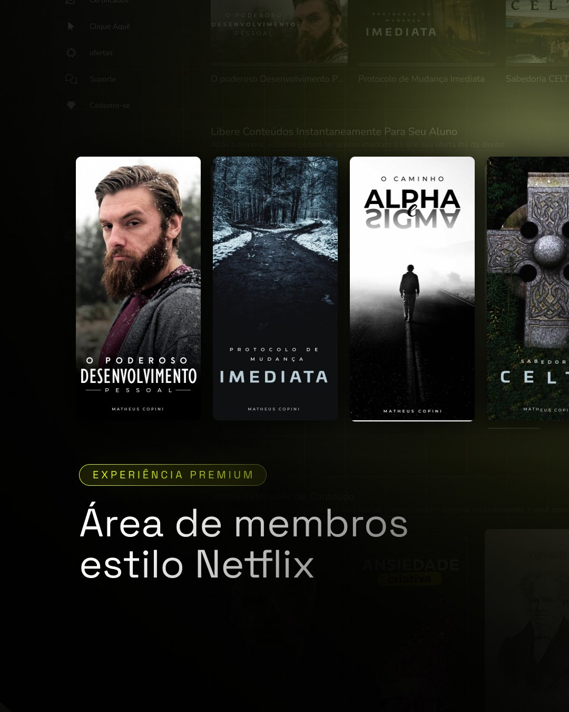
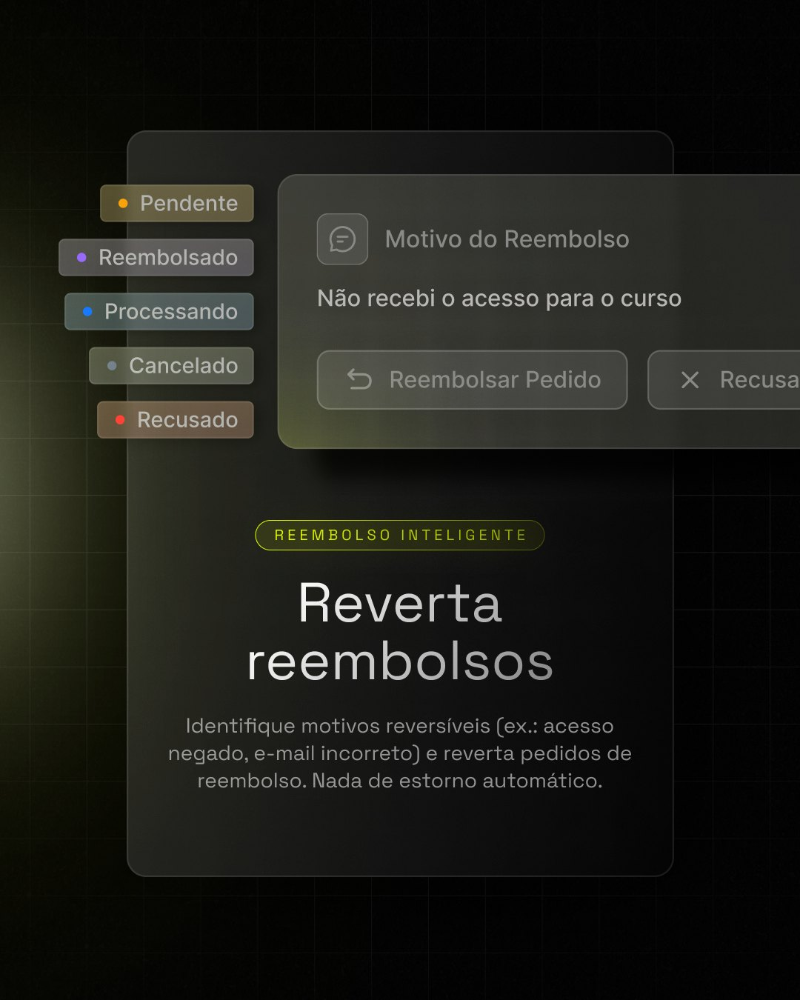
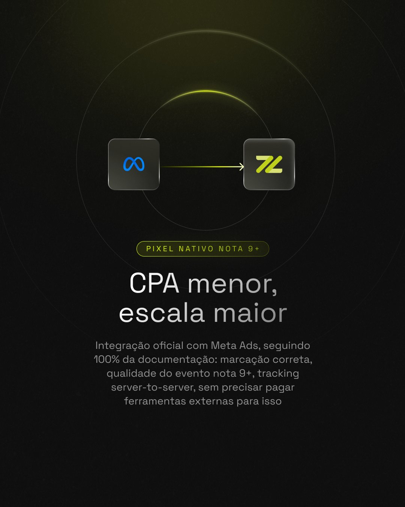
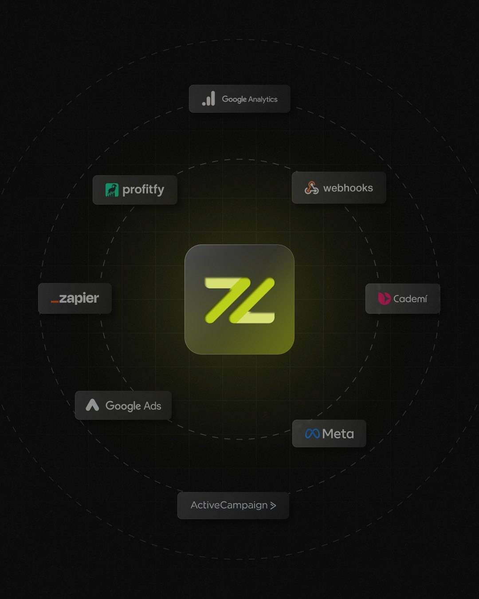
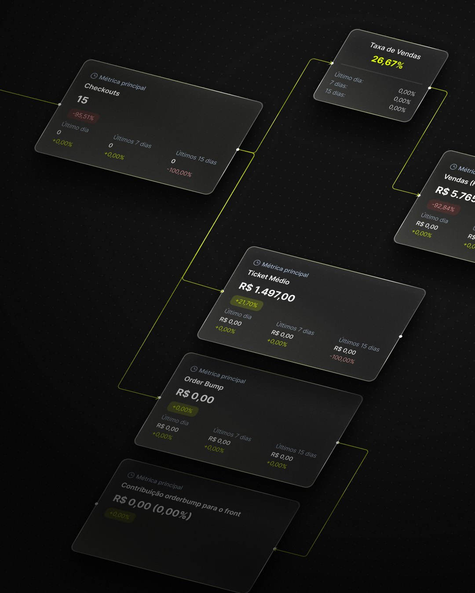

Zouti
Um sistema de templates para redes sociais que transforma funcionalidades de produto em posts com cara de lançamento.
- Cliente
- Zouti
- Papel
- Design
- Escopo
- Templates de redes sociais, sistema visual e cenas de produto
Contexto
A Zouti é uma plataforma de vendas para produtores digitais: checkout, parcelamento, área de membros, aplicativo, reembolsos, pixel e integrações. Muitas funcionalidades para comunicar, e todas precisavam soar como parte da mesma marca.
O desafio era criar templates que o time pudesse replicar com rapidez e que, ao mesmo tempo, apresentassem cada funcionalidade com o peso de um lançamento.


Sistema
Todos os posts partem da mesma base: fundo quase preto, superfícies em vidro fosco, uma luz verde-limão que entra pela borda e uma etiqueta em caixa-alta espaçada que nomeia a funcionalidade. O título, em Space Grotesk, ganha um degradê do branco para o cinza que dá profundidade sem usar outra cor.
No lugar de ilustrações genéricas, entram as próprias interfaces do produto: notificações de venda, dashboard de métricas, área de membros e o fluxo de reembolso. O produto vira a imagem.
-
Verde Zouti
- HEX
- #E4FF00
- RGB
- 228 255 0
-
Verde Lima
- HEX
- #BCCF1C
- RGB
- 188 207 28
-
Verde Claro
- HEX
- #D7DF75
- RGB
- 215 223 117
-
Grafite
- HEX
- #141414
- RGB
- 20 20 20
-
Branco
- HEX
- #FFFFFF
- RGB
- 255 255 255
Space Grotesk
Inter






Resultado
Um conjunto de templates com regras claras de cor, tipografia, luz e composição, pronto para receber novas funcionalidades sem precisar reinventar o layout. Cada post apresenta uma única ideia, e o feed inteiro se reconhece como Zouti.